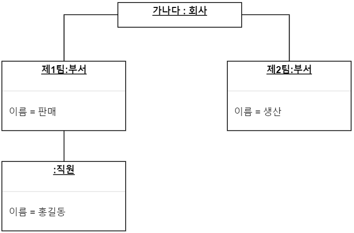

클래스 다이어그램(Class Diagram) 개요
학습 시작

우리는 지금부터 클래스 다이어그램에 대한 학습을 시작할 것입니다.
여러분은 직접 다이어그램을 그려보고 문제에 대한 정답을 확인할 수 있는 에디터가 준비되어 있습니다.
각 다이어그램의 구성요소들이 있으며, 각 구성요소를 가져다 사용하면 됩니다.
클래스 다이어그램
클래스 다이어그램은 클래스들 간의 관계를 보여주는 구조 다이어그램입니다.
클래스 사이의 관계를 표기하여 클래스 내부의 정적인 내용들을 보여줍니다.
클래스 다이어그램의 특징
클래스 다이어그램은 시스템 내 클래스들의 정적인 구조를 표현합니다.
시스템의 일부 또는 전체의 구조를 나타낼 수 있습니다.